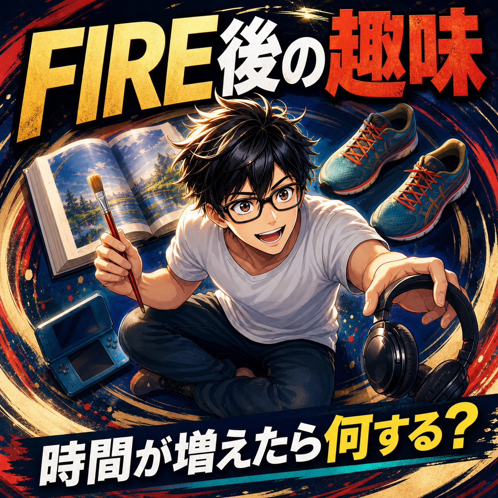

FIRE COLUMN
FIRE後の趣味は何がいい？時間が増えてからこそ難しい理由

.png) RELATED ARTICLE
FIRE後の毎日がつまらないと感じたとき、僕が見直したこと
仕事をして、食事をして、寝る。翌日も同じことを繰り返す。「なんか人生がつまらない」と感じるとき、原因は大きな失敗ではなく、毎日が予測できすぎることかもしれません。
wakuwaku-fire-git.pages.dev ↗
RELATED ARTICLE
FIRE後の毎日がつまらないと感じたとき、僕が見直したこと
仕事をして、食事をして、寝る。翌日も同じことを繰り返す。「なんか人生がつまらない」と感じるとき、原因は大きな失敗ではなく、毎日が予測できすぎることかもしれません。
wakuwaku-fire-git.pages.dev ↗
 COMMUNITY
FIREを本音で話せる場所
ワクワクFIRE道。FIREや自由な人生を目指す人が交流できるコミュニティ。
community.camp-fire.jp ↗
COMMUNITY
FIREを本音で話せる場所
ワクワクFIRE道。FIREや自由な人生を目指す人が交流できるコミュニティ。
community.camp-fire.jp ↗
FIRE後の趣味は何がいいのか。時間が増えれば自然に充実するわけではありません。ゲーム中心だった時期から、散歩・食事・発信・新しい挑戦へ広がった経験をもとに考えます。
まいど！ワクワクFIREのまるです。
「FIREしたら時間が余る。趣味でも見つけて、毎日楽しく過ごせばええやん」
たしかに、その通りです。けど、時間が増えたからといって、趣味が自動で見つかるわけではありません。やりたいことが何も浮かばず、せっかくの自由を動画やゲームだけで埋めてしまうこともあります。
僕はFIRE直後、2年半ほどゲーム中心の生活になりました。ゲームが悪いのではなく、ほかの行動を試す前に、楽なものへ全部流れていた。後から振り返ると、趣味の問題というより、生活の選択肢を一つにしていたことが問題でした。
趣味は、退職したら降ってくるものではない
会社員時代は、休日が限られているからこそ、趣味の時間が特別に感じられます。FIRE後は平日も休日も使える。いつでもできると思うと、逆に今やらなくてもいいとなりやすい。
「いつか旅行する」「いつか読書する」「いつか運動する」。この“いつか”が、ずっと来ない。僕も自由になった直後は、やりたいことより寝たいことが勝っていました。
趣味を見つける前に、まず一度触ってみる。合わなければやめる。大げさな目標を作らず、入口だけ作るのがコツです。
ゲーム中心の2年半から学んだこと
ゲームをしている時間は楽しい。勝ったり、進んだり、仲間と盛り上がったりする。だから、本人は充実しているつもりになれます。
でも、ゲームを閉じた後に誰とも話さず、体も動かさず、何かを作った感覚もない日が続くと、生活の手応えが薄くなる。僕は思考力や会話の感覚、困難に挑むバイタリティが落ちたと感じました。
趣味は、ただ気分を変えるものだけではありません。人とつながる、体を動かす、作る、学ぶ、笑う。複数の役割を持つ趣味があると、時間の使い方に厚みが出ます。
小さな趣味を五つの方向から試す
何をすればいいか分からない時は、趣味を名前で探さず、行動の方向で考えます。
- 体を動かす：散歩、サイクリング、軽い運動
- 手を動かす：料理、文章、写真、工作
- 頭を動かす：読書、パズル、勉強会
- 人と会う：友人との通話、コミュニティ、イベント
- 味わう：外食、音楽、景色、家族との時間
どれも特別な道具が必要なものではありません。僕が平日の昼にラーメンを食べたり、散歩をしたりするのも、立派な時間の使い方です。
2026年のチャレンジで、合わないものも分かった
2026年には、配達、パズル、ライブ、勉強会など、いくつかの新しいことを試しました。全部が長く続いたわけではないです。けど、やってみたからこそ、面白い部分と疲れる部分が分かった。
趣味を選ぶとき、続いたかどうかだけで採点すると失敗が多く見えます。一回やって「これは違う」と分かったなら、それも十分な収穫です。自分の好きの芝生を育てるには、まず水をやってみるしかない。
少しでもワクワクしたら即始めろ、という考え方は、趣味探しにも使えます。熱があるうちに小さく触る。冷めたら、次へ行く。
趣味に生産性を求めすぎない
FIRE後の趣味を、収入やスキルへつなげようとしすぎると、休める場所がなくなります。文章を書く、動画を作る、コミュニティを運営する活動も、僕にとっては楽しい一方で、責任がある。
何も生まない散歩やゲームも必要です。大事なのは、全部を生産性で採点しないこと。逆に、全部を消費だけで埋めないこと。両方あって、ちょうどいい。
趣味は、気分の逃げ道として持つ
家族の予定や体調、相場の値動きで、気分が沈む日はあります。そんな日に、すぐ成果を出せる活動だけを求めると、何もできなくなる。短い散歩や音楽、ゲームの一時間でも、頭を切り替える逃げ道になります。
趣味には、人生を変える役割まで背負わせなくていいです。楽しめたら十分。逆に、少し元気が戻ったら、文章を書く、人と話す、外へ出るなど別の行動へつなげてもいい。趣味を入口にして、生活の幅を戻していく感じです。
「こんなことをして何になるんやろ」と考えすぎない。何にもならない時間があるから、何かを始める力も残る。ここは、FIRE後ほど忘れたらあかんと思っています。
家族がいるなら、趣味の時間を先に共有する
家族と暮らしていると、自分だけの趣味時間をいつでも取れるわけではありません。僕も子どもの食事や送迎、寝かしつけが生活の中心になっています。
だからこそ、妻とお互いの自由時間を話す。子どもの予定で崩れても、また取り直す。趣味のために家族へ負担を押し付けるのではなく、家族の時間と自分の時間を両方守る設計にする。
自由な人ほど、周りの時間を自由に扱わないこと。ここはほんまに大事やなと思います。
趣味は一つに絞らなくていい
「自分の趣味はこれ」と一つに決める必要はありません。季節や体調、家族の状況で変わる。僕もゲーム、文章、YouTube、散歩、食事、人との会話を行ったり来たりしています。
今月は運動、来月は創作。忙しい時期は家族の時間を優先する。趣味は肩書きではなく、日々の中へ置く小さなスイッチです。
FIRE後の趣味は、人生の輪郭を取り戻す
FIRE後に趣味が見つからないのは、珍しいことではありません。自由が大きすぎて、最初の一歩が重くなっているだけかもしれない。
一回散歩する。一人で外食する。短い文章を書く。誰かと話す。そこから、次にやりたいことが見えてくることがあります。
趣味で毎日を埋め尽くす必要はないです。自分が笑える時間を少しずつ増やす。FIRE後の暮らしは、そういう小さな選択の積み重ねで、だんだん自分の色になっていくんやと思います。